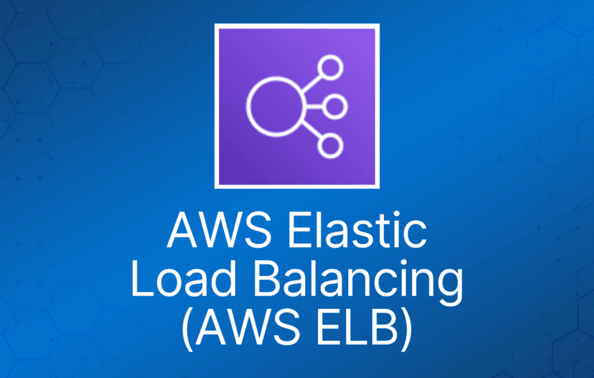
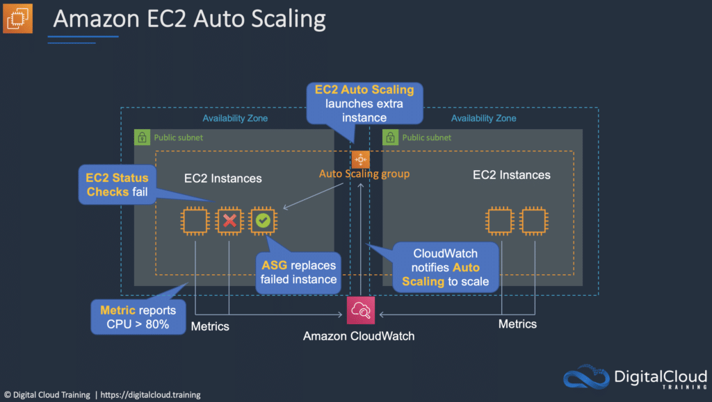
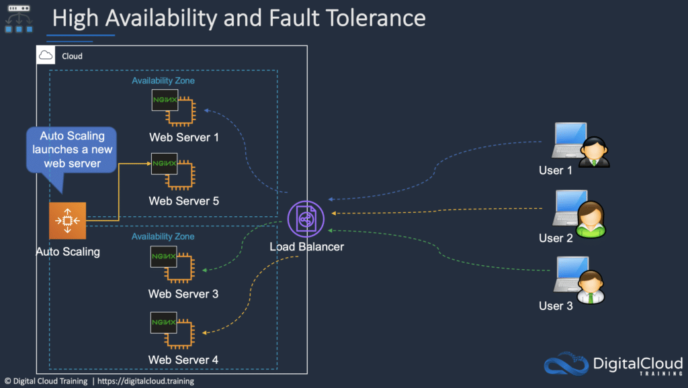

Auto Scaling 和 Elastic Load Balancing 是 AWS 的两项功能，可以单独使用，也可以结合使用，以实现弹性（elasticity）和高可用性。
Amazon EC2 Auto Scaling
Amazon EC2 Auto Scaling 根据应用的流量需求，自动完成 Amazon EC2 实例的启动（横向扩展 scale out）和终止（横向收缩 scale in）。
Auto Scaling 帮助你确保始终有正确数量的 EC2 实例来处理应用负载。
Amazon EC2 Auto Scaling 提供了弹性和可扩展性。
你可以将一组 EC2 实例创建为一个集合，称为 Auto Scaling group (ASG)。
你可以为每个 ASG 指定最小实例数，AWS Auto Scaling 会确保组内实例数量永远不会低于该值。
你也可以为每个 ASG 指定最大实例数，组内实例数量永远不会超过该值。
可以配置期望容量（desired capacity），AWS Auto Scaling 会确保组内保持这个数量的实例。
你还可以指定 scaling policy，控制 Auto Scaling 何时启动或终止实例。
Scaling policy 决定了 ASG 何时、是否以及如何扩展和收缩（按需/动态扩展、周期性/计划扩展）。
Scaling Plan 定义了触发条件，以及何时应该预置/释放实例。
launch configuration 是用于创建新 EC2 实例的模板，包含实例系列、实例类型、AMI、key pair 和 security group 等参数。

Amazon Elastic Load Balancing (ELB)
ELB 自动将传入的应用流量分发到多个目标，例如 Amazon EC2 实例、容器和 IP 地址。
ELB 可以在单个 Availability Zone 内或跨多个 Availability Zone 应对应用流量的变化。
ELB 具备高可用性、自动扩展和强大的安全性，是让你的应用具备容错能力所必需的。
AWS 上有四种类型的 Elastic Load Balancer (ELB)：
- Application Load Balancer (ALB)——第 7 层负载均衡器，根据请求内容进行连接路由。
- Network Load Balancer (NLB)——第 4 层负载均衡器，根据 IP 协议数据进行连接路由。
- Classic Load Balancer (CLB)——三者中最老的一种，在第 4 层和第 7 层都提供基本的负载均衡（考试已不再涉及）。
- Gateway Load Balancer (GLB)——将连接分发到虚拟设备并对其进行横向扩缩（考试不涉及）。
Application Load Balancer (ALB)
ALB 最适合对 HTTP 和 HTTPS 流量进行负载均衡，提供面向现代应用架构（包括微服务和容器）的高级请求路由。
Application Load Balancer 工作在单个请求级别（第 7 层），根据请求内容将流量路由到 Amazon Virtual Private Cloud (Amazon VPC) 内的目标。
Network Load Balancer (NLB)
NLB 最适合对需要极致性能的 TCP 流量进行负载均衡。
Network Load Balancer 工作在连接级别（第 4 层），将流量路由到 Amazon Virtual Private Cloud (Amazon VPC) 内的目标，能够每秒处理数百万个请求，同时保持超低延迟。
Network Load Balancer 还针对突发和剧烈波动的流量模式进行了优化。
